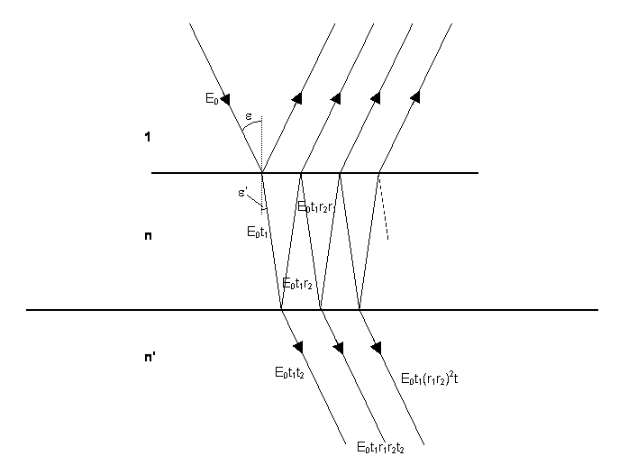
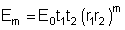
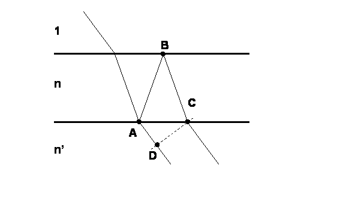
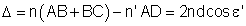
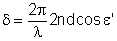
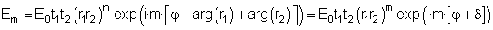
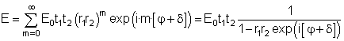
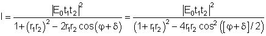
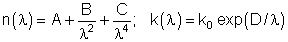

This applet allows the study of the factors that take part in an experiment with a thin-film layer. The experiment consists of two possible configurations. In the first one light with a given wavelength λ comes onto a sample consisting of a glass substrate with a thin-film coating on top of it. On a second configuration, the sample consists of a thin-film layer surrounded by air. The applet allows to study the influence of the thickness, the refractive index and the extinction coefficient of the film on the reflectance and transmittance properties of the sample. Furthermore, it permits visualizing this influence with respect to the wavelength through a graphical representation (spectrum).
Finally, the applet has the possibility of carrying out a virtual experiment where, from a measured spectrum, the values of thickness and refractive index of the thin-film layer can be deduced.
The most important elements that can be calculated by the program are the Transmittance (T(λ)) and Reflectance (R(λ)) spectra of the sample. To calculate these values from the refractive index n and extinction coefficient k and the thickness of the thin film d it is necessary to consider the model in figure 1.

Figure 1: Sketch of the multiple reflections inside a thin-film layer.
Let us consider a plane wave incident from the medium (refractive index 1) onto a thin-film layer with an angle ε and with amplitude E0. The aplitude of the transmitted wave into the film can be expressed as E0t1, where t1 can be the Fresnel coefficient for each of the two possible polarizations 's’ or ‘p’. This plane wave propagates inside the thin-film with an angle ε’ and undergoes multiple reflections. The amplitude after the first reflection on the film-substrate interface is E0t1r2 where r2 is the Fresnel reflection coefficient from the film to the substrate. At this point, part of the wave is also transmitted with amplitude E0t1t2 where t2 is the Fresnel transmission coefficient from the film to the substrate. After the second reflection inside the film, the amplitude of the reflected wave is E0t1r2r1 where r1 is the Fresnel reflection coefficient from the film to the incident medium. This wave is then transmitted to the substrate with amplitude E0t1r2r1t2. Thus, the amplitude of the m-th transmitted wave onto the substrate is:


Figure 2: Sketch for the calculation of the optical path difference between two consecutive transmitted waves.
The next step consists of analyzing the relative phase of each of the transmitted waves. To perform the calculation it is necessary to take two reference points in two consecutive transmitted waves and the these two points are placed on the same plane perpendicular to the propagation direction of the waves, as indicated in figure 2. It can be shown that the optical path difference between two consecutive transmitted waves is:
,
The phase corresponding to this optical path is:

Thus, the complex amplitude of the m-th transmitted wave can be expressed as:
.
Note that in the previous expression, the modulus and phase of the Fresnel refelction coefficients r1 i r2 have been written separately. The pahses arg(r1) and arg(r2) can be different from 0 in those cases when the refractive index of the substrate is greater than the refractive index of the film (arg(r2)=π) or when the extinction coefficient of the film is not zero (k≠0, arg(r1)≠0 and arg(r2)≠0).
The total resulting amplitude is the sum of the complex amplitudes of all the transmitted waves:
.
The resulting transmitted intensity is proportional to the square modulus of the total transmitted complex amplitude:
,
where the relation cos(φ)=2cos2(φ/2)-1 has been applied. Analyzing the previous expression, the conditions a maximum or minimum of transmitted light can be deduced. For instance, for a dielectric film (with k=0) these conditons can be summarized on the following table:
| (m=0,1,2,...) | n<n' | n>n' |
| Maximum transmitted intensity | 2ndcos(ε’)=mλ | 2ndcos(ε’)=(2m+1)λ/2 |
| Minimum transmitted intensity | 2ndcos(ε’)=(2m+1)λ/2 | 2ndcos(ε’)=mλ |
Concerning the reflectance, its behavior is the opposite to the transmittance: where the former is maximum the latter is minimum and vice-versa. In the case when the film is slightly absorbing (extinction coefficient different from 0) the conditions for having a maximum or a minimum in the transmittance are more complex since they have to take into account the phase δ.
The final Reflectance and Transmittance of the sample depend as well on the Reflectance and Transmittance of the second face of the substrate. Since the latter do not depend on the characteristics of the film, this second face does not affect the distribution of R and T maxima and minima.
This window shows a sketch of the sample with the substrate in blue and the film on its top in yellow. Incident light is represented by a set of beams in green while light reflected is represented in a set of magenta beams. Transmitted light is represented in cyan. The sketch of the sample includes also the values of transmittance (T) and reflectance (R) of the sample. It is worth noting that the light is assumed to be monochromatic and with natural polarization (a uniform superposition of all possible polarization states).
The window "Transmission and Reflection" allows changing the thickness of the layer (d), the wavelength of the incident light (λ), and the angle of incidence (θ). Furthermore, the values of the refractive index (n) and extinctionc coefficient (k) can be changed by means of the buttons "Change n" and "Change k". These buttons open two windows with the names "Refractive index parameters" and "Extinction coefficient parameters" respectively. These parameters correspond to a mathematical model for the refractive index and the extinction coefficient that follows the expression:

These windows allow changing the values of A, B, C, k0 and D and show a plot of these indexes against the wavelength.
This window shows a diagram of the path followed by a beam inside the thin film. For the selected wavelength it shows the value of the refractive index and of the extinction coefficient of the film (n_l and k_l on the diagram), as well as the refractive index of the substrate. The window allows changing the thickness of the film (d), the wavelength (λ) the angle of incidence (ε). In addition, the values of the refractive index and of the extinction coefficient can be changed with the buttons "Change n" and "Change k".
This window shows the Reflectance and Transmittance spectra for the sample with the current configuration. It has to be kept in mind that these values are the result of the transmission and reflection on the film and also on the second face of the substrate. By placing the cursor on the plot, the values corresponding to the position with respect to the coordinate axes on the graph can be read on the lower part of the window. The button "Configure Plot" allows defining the way the plot is presented. The lower and upper limits of the wavelength represented on the plot can be defined as well as the lower and upper limits of the reflectance and transmittance represented on the plot. These last two values can be assigned automatically with the buttons on the lower part of the window. Thus, the button "R/T Range 0/1" assigns the value 0 to the "Initial T and R value" and 1 to the "Final T and R value". The button "Auto Range" assigns automatically the minimum R/T range that permits representing simultaneously the two spectra. The buttons "Auto Range R" and "Auto Range T" assign automatically the minimum R/T range that permits representing the spectra of R or T respectively.
This window shows a list of the Transmittance maxima and minima that can be seen in the spectrum plot. The option "Variable: Wavelength" lists the maxima and minima as a function of the wavelength. This list is caluclated for the values of n(λ), k(λ) and thickness of the film and for the selected angle of incidence. The option "Variable: Angle" the list is calculated as a function of the angle of incidence for the wavelength selected on the left window.
The button "Experiment" simulates an experimental situation where a sample composed of a substrate with a transparent (k=0) thin-film coating on top of it. The thickness and refractive index of the thin-film are unknown and they have to be deduced from the analysis of a spectrum taken witn a spectrometer. The window "Spectrum" shows two spectra (in blue and in yellow, R exp and T exp) that correspond to the unknown sample and two spectra corresponding to the model with the current selected values. The virtual experiment consists of finding out the values of thickness d and of the variables A and B which characterize the spectral behavior of the refractive index. To change the values of A and B the button "Change n" should be used. The procedure to find the correct values is that of trial and error: 1) try to change the value of one of these parameters, 2) check whether the theoretical spectra fit better or not the experimental ones and 3) decide if the change in the parameter is in the right sense or not.
| Transmission and Reflection | Phase Difference | Experiment | |||
| Reflectance | R | Film refractive index | n_l | Unknown sample Reflectance | R exp |
| Transmittance | T | Film extinction coefficient | k_l | Unknown sample Transmittance | T exp |
| Film refractive index | n | Substrate refractive index | n_s | ||
| Film extinction coefficient | k | Wavelength | λ | ||
| Propagation angle inside the thin film | θ | ||||
| Change n | Change k | ||
| Characteristic coefficients of the refractive index | A, B, C | Characteristic coefficients of the extinction coefficient | k0, D |